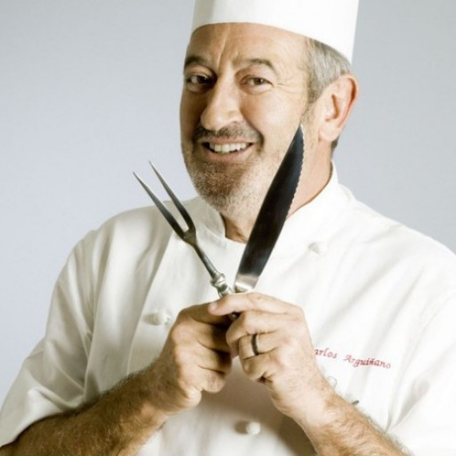
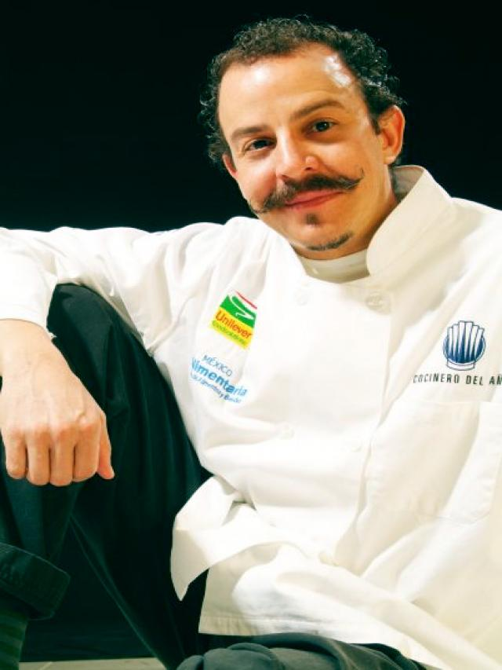
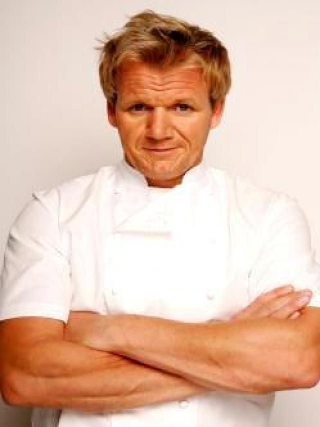

Nuestro equipo
Conoce a los chef

Karlos Arguiñano
Karlos Arguiñano es un cocinero, presentador de televisión, actor, escritor y empresario español.

Benito Molina
Benito Molina es un chef mexicano, jefe y dueño de 3 restaurantes en Ensenada, Baja California

Gordon Ramsay
Gordon James Ramsay es un chef, dueño de restaurantes y presentador de televisión británico.